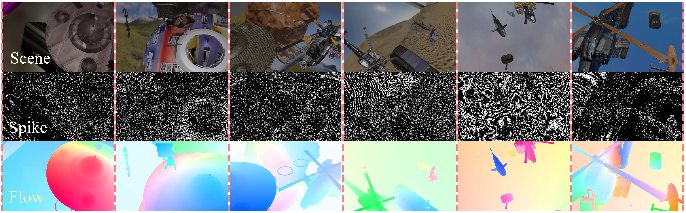
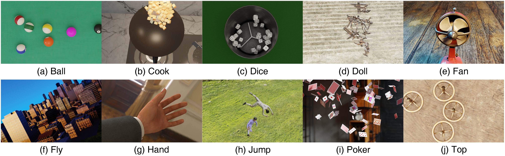

SPIFT Dataset Download Dataset
SPIFT (SPIkingly Flying Things) is the first spike-based optical flow estimation training dataset, containing 100 scenes, each describing the translational and rotational motion of different objects against random backgrounds.

Dataset Features
- Contains 100 diverse scenes
- Each scene provides 500 frames of spike signal stream
- Provides corresponding real images and optical flow data
- Based on a high frame rate spike camera of 40000Hz
Optical Flow Data Generation Instructions
- Optical flow data is generated every 10 spike frames
- Optical flow data is generated every 20 spike frames
- Considering the small motion amplitude at high frame rates, optical flow is not generated for every frame
PHM Dataset
PHM (Photo-realistic High-speed Motion) is a highly realistic test dataset with visual features that closely match the real world.

| Scene | Ball | Cook | Dice | Doll | Fan | Fly | Hand | Jump | Poker | Top |
|---|---|---|---|---|---|---|---|---|---|---|
| Number of Spike Frames | 1000 | 4000 | 3000 | 1000 | 4500 | 2000 | 1400 | 3200 | 1000 | 1000 |
Scene Descriptions
- Ball: Billiard collision scene
- Cook: Vegetables stirring in a pot scene
- Dice: Dice rotation scene
- Doll: Doll falling from a height scene
- Fan: Electric fan blade rotation scene
- Fly: Drone flying in the air scene
- Hand: Arm waving in front of the moving camera scene
- Jump: Two people tumbling and jumping scene
- Poker: Playing cards tossing into the air scene
- Top: Top spinning and colliding at high speed scene
Special Note: The "Fly" scene in the PHM dataset has the characteristic of abnormally intense motion, and it is recommended to exclude it in research. We will update and reconstruct this scene in future work.